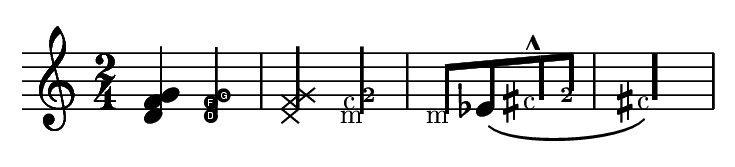

LilyPond is not unique in making music notation: there are a lot of programs that print music, and nowadays most of the newly printed music is made with computers. Unfortunately, that also shows: just ask any musician that plays classical music: new scores do not look as nice as old (from before, say, 1970) scores: the new ones have a bland, mechanical look. They are not at all pleasurable to play from.
To illustrate this, take a look at the following examples. Both are editions of the 1st Cello Suite by J.S.Bach. The one on the left is a very beautifully hand-engraved edition from 1950, the one on the right is a typical contemporary computer product. Take a few seconds to let the looks of both pages sink in. Which one do you like better, and why?
|
|
|
| Bärenreiter (BA 350, (c) 1950) | Henle (nr. 666 (c) 2000) |
The left picture looks nice: it has flowing lines and movement. It's music, and it's alive. Now, the picture on the right shows the same music, and it was written by Bach. His music surely has liveliness and flowing lines.... Except, the score doesn't show it: it looks rigid and mechanical. To understand better why that is, let's blow up a fragment of both pieces:

Hand-made

Computer-made
The location of the bar lines is a giveaway. In the Henle edition, both barlines are on exactly the same horizontal location. In all note heads are also on the exact same horizontal location. When you look back at the whole page, you can easily verify that almost all barlines are in the same location, as are most of the note heads. The entire thing is spaced as if it were put to a big grid, which is what causes the mechanical impression.
This is not the only error on this example, and more importantly, this piece is not the only one with typographical errors. Sadly, almost all music printed nowadays is full of basic typographical mistakes.
Musicians are usually more absorbed with performing the music than with studying its looks, so this nitpicking about typographical details may seem academical. That is not justified. This piece here has a monotonous rhythm. If all lines look the same, they become like a labyrinth. If the musician looks away once or has a lapse in his concentration, he will be lost on the page.
In general, this is a common characteristic of typography. Layout should be pretty, not only for its own sake, but especially because it helps the reader in his task. For performance material like sheet music, this is doubly important: musicians have a limited amount of attention. The less attention they need for reading, the more they can focus on playing itself. In other words, better typography translates to better performances.
Computer music print outs do not look good. According to us, this caused by inadequate software. In other words, programmers have been doing a shoddy job on notation programs. To illustrate that, we have a piece of music, which was made in one of the most popular `professional' notation programs, Finale 2003, using all of the default settings. The music is from the Sarabande of the 2nd Cello Suite by J. S. Bach.

This example far surpasses the previous one when it comes to formatting errors: there are errors in literally every measure. The errors come in all sizes: a big one is the oddly s p a c e d o u t last line. A smaller one is the flat in measure 13, which is covered by the note preceding it. Here is a magnification of that measure:

The errors go down to the teensy details: below is a blowup of the beam in that measure. Of course, in proper typography the beam should not stick out to the right of the stem, and the ribbles provide a telling glimpse into Coda Music Technology programmers' aptness (or lack thereof) with the underlying PostScript technology.

Now, one could refute that Finale has a graphical interface, and it lets you easily move about elements to correct errors, or use plug-ins to do so. This is certainly true: in fact, good professional engravers that use Finale typically spend the majority of their time correcting all the errors that Finale routinely makes. However, that is exactly the point that we want to make: you have to spend a lot of time correcting pretty obvious errors. For the spaced out line, that is doable, but imagine that you have to correct each and every beam that sticks out of the stems, by hand?
There is a less obvious reason why correcting things by hand is a bad idea. Consider again measure 13 reproduced above. The misplaced flat is pretty obvious, but did you notice that repeat bar? Its lines are too far apart. Did you notice that the eighth rest is too far down? Did it occur to you that the stem of the last eighth note is too long?

Unless you are an expert, typographical errors will --at best-- irk you without being obvious. At worst, they go unnoticed and still be in the final print.
This is one example may seem contrived, but in fact, it's not. All major producers of notation software claim to follow engraving standards, but all of them make systemic mistakes. If you want to assess the output of your favorite program, then buy a decent hand-made score from a respectable publisher, and try to reproduce one page of it. Then compare the printouts using a magnifying glass, a ruler, and your typographical eye. Figure out which one looks better, and find out for yourself why.
Most notation software needs babysitting to produce acceptable output. In our opinion, all this tweaking and tuning is something that a computer should do for you.
Our goal with LilyPond is to write an an automated engraving system: a system that will produce beautiful music ("engraving") automatically. In concept, such a system is simple: the objective of such a system is to produce music notation, a graphical image. The content of this picture is music: pitches and durations. In automated system, we want to generate the form from the content, so schematically, the program could be represented as

|
<-- | \notes { c'4 d'8 } |
| form | LilyPond | content |
There are two problems in producing such a program.
First, there is music notation: the science of knowing which symbols to use for what. Common music notation developed from a system that medieval monks used to record and remind how their sacred music was sung. Over the course of the centuries the system evolved: some elements disappeared, but mostly it grew and grew, to accomodate the musical vocabulary that continued to expand. The graphic language of notation is still under development; the innovations of contemporary music require still newer and more complex notations.
[should have an astoundingly complex piece of notation here. Berio, Ferneyhough, Stockhausen?]
The core problem with music notation is that it is too complex. It can be somewhat formally described, but that description would be huge and unwieldy. So how do put that in a program?
We attack the unwieldy problem with an army of program plug-ins. Each plug-in is designed to handle a single notation construct. For example, there is a plug-in that creates note heads, and another that creates stems. There is a plug-in that makes repeat bar lines, and one that makes repeat brackets. The plugins communicate through the LilyPond architecture: this communication ensures that stems are attached to note heads, and repeat brackets to the bar lines.
[how to make more compelling ?]
 The
quality of the end result must judged visually. This is virtually
impossible to capture in formal rules.
The
quality of the end result must judged visually. This is virtually
impossible to capture in formal rules.
If craftsmen need over ten years to become true masters, how could we simple hackers ever write a program to take over their jobs?
The answer is: we cannot! At least, not in one go.
Instead, we try to gradually refine the program: we implement a feature, we start with a half-baked solution that might cover 75% of the cases badly, but as we continue development of the program, these solutions are replaced and refined, so that we provide better and better formatting, and getting 85, 90 or even 95 % of the cases correct. The remaining 15, 10, or 5 % of the cases must be adjusted by hand.
This is only possible if the program is modular enough to allow development of such a kind: formatting rules are constantly refined or replaced to improve the program, and and the user must be able to override all formatting decisions. Hence, we need an architecture where rules and decisions can be changed on the fly.
This architecture is formed by GUILE, an interpreter for the LISP-like programming language Scheme. Layout objects representing note heads, slurs, accidentals, etc. carry variables. Formatting rules (Scheme functions) are stored in these variables. In the following example, the function that produces a note head is changed on the fly, while the rest of the formatting is unaltered:

Distances, directions and thicknesses, i.e. formatting decisions, are also stored in variables. By changing these, the typographical style of a score may be altered. In the next example, the thickness of the stem is increased for every note:

A second difference is in the blackness of the page: the Bärenreiter has a stronger look, simply because it uses a heavier font, and thicker staff lines. This is also easily visible when you look at blowups of the scores:


Finale is a registered trademark of MakeMusic! Inc.